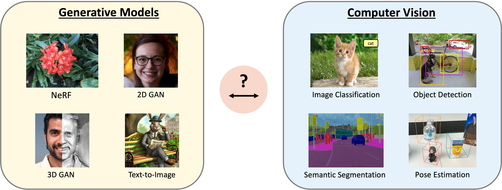

4th Workshop on Generative Models
for Computer Vision
CVPR 2026
8:45am - 5:00pm, Thursday, June 4th, 2026 Room 205, Denver Convention Center, Denver, Colorado
Overview
Recent advances in generative modeling leveraging generative adversarial networks, auto-regressive models, neural fields and diffusion models have enabled the synthesis of near photorealistic images, drastically increasing the visibility and popularity of generative modeling across the computer vision research community. However, these impressive advances in generative modeling have not yet found wide adoption in computer vision for visual recognition tasks. In this workshop, we aim to bring together researchers from the fields of image synthesis and computer vision to facilitate discussions and progress at the intersection of those two subfields. We investigate the question: "How can visual recognition benefit from the advances in generative image modeling?". We invite a diverse set of experts to discuss their recent research results and future directions for generative modeling and computer vision, with a particular focus on the intersection between image synthesis and visual recognition. We hope this workshop will lay the foundation for future development of generative models for computer vision tasks.

Invited Speakers


Efstratios Gavves
University of Amsterdam

Georgia Gkioxari
Caltech


Alan Yuille
JHU
Schedule
| 4th of June, 2026 | |
|---|---|
| 8:45 | Opening |
| 9:00 | Efstratios Gavves: Physical World Models & Agents: Generative Vision for Embodied Intelligence |
| 9:40 | Sherry Yang: Improving Physical Agents in a Generative World Model |
| 10:20 | Coffee Break |
| 10:40 | Yilun Du: Visual Scene Understanding through Inverse Generative Modeling |
| 11:20 | Chelsea Finn: Emergent Physical Generalization |
| 12:00 | Lunch |
| 13:00 | Posters |
| 14:00 | Hila Chefer: Is Scale All You Need? A Case for Native Generative-Representation Learning |
| 14:40 | Matthias Niessner: 3D Generative Models |
| 15:20 | Coffee Break |
| 15:40 | Alan Yuille: TBD |
| 16:20 | Georgia Gkioxari: Beyond Image and Language: Building 3D Perception Systems |
| 17:00 | Closing |
Covered Topics
-
Submission site: OpenReview
- Advances in generative image models
- Inversion of generative image models
- Training computer vision with realistic synthetic images
- Benchmarking computer vision with generative models
- Analysis-by-synthesis / render-and-compare approaches for visual recognition
- Self-supervised learning with generative models
- Adversarial attacks and defenses with generative models
- Out-of-distribution generalization and detection with generative models
- Ethical considerations in generative modeling, dataset and model biases
Author kit: CVPR Author KIT.
We invite submissions of both short papers (4 page abstracts) and long papers (8 page full papers). Submissions to this workshop are non-archival, allowing for the inclusion of ongoing, unpublished work or dual submission. The review process will be conducted under double‑blind conditions. Accepted submissions will be presented as posters at the workshop, and a selection of papers will be considered for the Best Workshop Paper Award. The papers will Not be included in the proceedings of CVPR. References may be included on pages beyond the page limit.
Potential topics include but are not limited to:
Important Dates
| Event | Date (Anywhere on Earth) |
|---|---|
| Workshop paper submission deadline | May 10, 2026 |
| Decisions | May 20, 2026 |
Accepted Papers
-
Re-Depth Anything: Test-Time Depth Refinement via Self-Supervised Re-lighting [Paper]
-
Best PaperFreeOrbit4D: Training-Free Arbitrary Camera Redirection for Monocular Videos via Foreground-Complete 4D Reconstruction [Paper]
-
Selective Timestep Weighting and Advantage-Based Replay for Sample-Efficient Diffusion RLHF [Paper]
-
Learning from Semantic Dictionaries: Discriminative Codebook Contrastive Learning for Unified Visual Representation and Generation [Paper]
-
MatLat: Material Latent Space for PBR Texture Generation [Paper]
-
Scale Space Diffusion [Paper]
-
Novel View Extrapolation with Video Diffusion Priors [Paper]
-
Are Image Generators Zero-shot Perceivers? A Rigorous Evaluation [Paper]
-
Best PaperRISE: Single Static Radar-based Indoor Scene Understanding [Paper]
-
Frequency-Aware Mamba Encoder for Spatial Reasoning [Paper]
-
Less Is More: Training-Free Acceleration of Identity-Preserved Generation [Paper]
-
Guidance for Low-Level Perceptual Editing in Unconditional Diffusion Models [Paper]
-
RareCrafter: Controllable Generative Augmentation for Rare Object Detection in Driving Scenes [Paper]
-
Early Commitment Without Revision: Diagnosing Sampling Instability in Binary Masked Generative Models [Paper]
-
SeeThrough3D: Occlusion Aware 3D Control in Text-to-Image Generation [Paper]
-
Scaling Laws for Synthetic Data Substitution: Architecture-Dependent Degradation in Vision Models [Paper]
-
Do Safety-Aligned Vision-Language Models Degrade Differently Under Common Image Corruptions? [Paper]
-
Do Synthetic Images Help Small-Scale Visual Classification? A Preliminary CIFAR-10 Study with Classical, Deep, and Generative Augmentations [Paper]
-
Breaking Spurious Correlations via Generative Randomization and Cross-Variant Self-Supervised Learning [Paper]
-
Post-Training Strains Diffusion Models: A Stability Analysis of Distillation, Robustness, and Unlearning [Paper]
-
Personalized Generative Models for Contextual Debiasing [Paper]
-
SIGMA-GEN: Structure and Identity Guided Multi-subject Assembly for Image Generation [Paper]
-
Beyond Flat Latent: Scale-Aware Disentanglement in Hierarchical Latent Spaces [Paper]
-
Graph Connectivity via Spring Energy for Detailed Captioning in Large Vision-Language Models [Paper]
-
ATHENA: Adaptive Test-Time Steering for Improving Count Fidelity in Diffusion Models [Paper]
-
Generative Transformer for Auto Computer-aided Design [Paper]
-
$\text{PartConcepts}$: A Unified Mechanism for Fine-Grained Part Localization and Generation [Paper]
-
Anchored Generation: Controllable Scene Variation via 3D-Aware Object Latents [Paper]
-
Let’s Fix Step-by-Step: Iterative Refinement for Compositional Image Generation [Paper]
-
Factored Generative Models through Mechanism Diversity [Paper]
-
WaveletFlow: Spatially-Localized Frequency Mixing for Flow Matching in PDE Turbulence Modeling [Paper]
-
Best PaperA Simple and Effective Zero-Shot Framework for Dynamic 3D World Modeling [Paper]
Organizers

Christian Theobalt
MPI-INF
Alan Yuille
JHU
Top